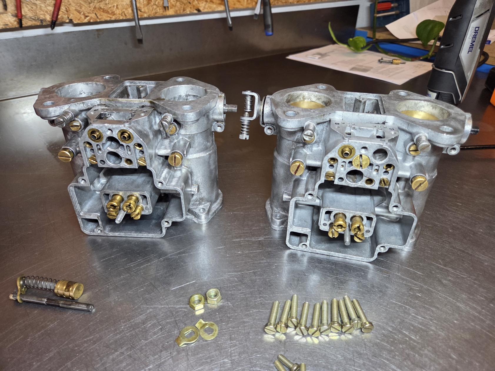
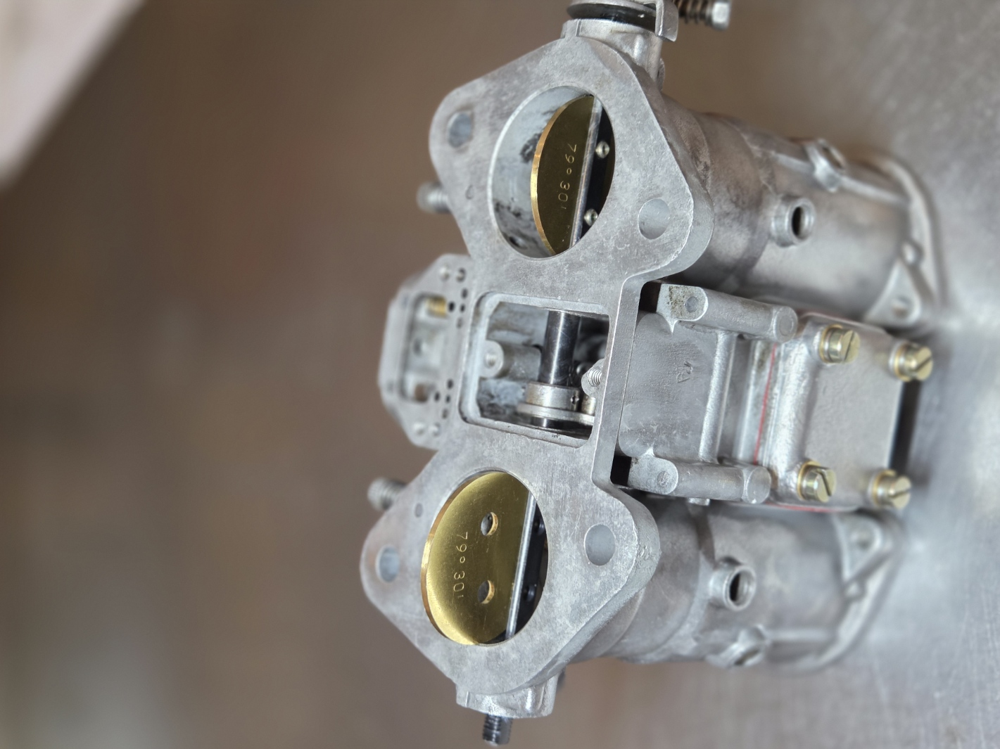
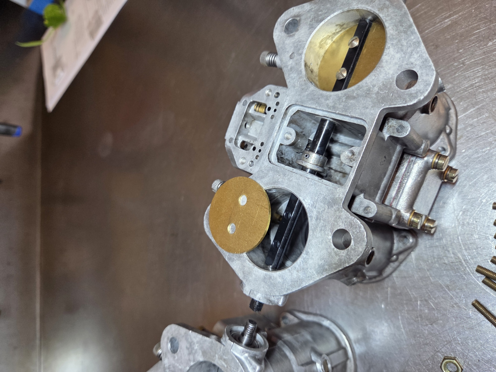

De Weber DCOE en IDF: legendarisch onder de klassiekers, geliefd om hun directe gasrespons en sound. Bekijk ze hieronder even, en lees daarna onze aanpak.
De Weber DCOE is een legendarische carburateur. Een icoon onder de klassieke sportwagens, geliefd om z'n directe gasrespons, brute sound en mechanische elegantie. Van Alfa Romeo tot Ford Escort RS, van rally tot circuit: als je het goed wil doen, doe je het met een Weber.
Bij Carburateur Service Nederland komen ze in alle soorten staten op de werkbank. Soms gloednieuw, maar meestal met jarenlange stilstand, verweerde pakkingen en benzinedamp van decennia geleden. En dat is precies waar wij van houden.
Van Bologna tot Spanje, het verschil in kwaliteit
We reviseren zowel de originele Weber DCOE's uit Bologna (Italië) als de latere versies van WEBCON uit Spanje. En eerlijk is eerlijk: er zit verschil in.
De Italiaanse Webers staan bekend om hun strakke passing, degelijke bouwkwaliteit en soepele loop, zelfs na jaren stilstand. De Spaanse Webers van Webcon zijn nette remakes, maar we merken vaak dat er speling zit op de gasklepassen, dat de passing van onderdelen net iets ruimer is, en dat ze daardoor minder strak lopen, vooral stationair. Dat maakt ze niet per se slecht, maar ze hebben nét wat meer aandacht nodig om perfect te presteren. En laat dat nou precies zijn wat wij doen.
En de Weber IDF?
De IDF is de downdraft-tegenhanger van de DCOE (die sidedraft is). Je vindt de IDF veel op luchtgekoelde boxermotoren, denk aan de klassieke VW Kever en bus, Porsche 356 en 911, maar ook op diverse kitcars en V-motoren, vaak per paar of in een hele batterij.
De aanpak is hetzelfde als bij de DCOE: volledig demonteren, ultrasoon reinigen, gasklepassen, sproeiers en emulsiebuizen controleren, slijtdelen vervangen en alles synchroon afstellen. Of je nu een set DCOE's of IDF's hebt: het draait om passing, schone kanalen en een nauwkeurige afstelling.
Onze aanpak: geen snelle poetsbeurt, maar een grondige revisie
Elke Weber-set krijgt bij ons een volledige behandeling:
- Volledige demontage tot het laatste schroefje
- Ultrasoon reinigen zodat ook de interne kanalen brandschoon zijn
- Controle van gasklepas, vlotters, sproeiers, emulsiebuis en chokehuis
- Vervanging van versleten onderdelen met A-kwaliteit revisiesets
- Afstellen, synchroniseren en indien nodig busjes op maat vernieuwen



Hieronder een paar sets die bij ons binnenkwamen, soms na 20 jaar stilstand in een schuurtje of op zolder. En tóch weten we ze vaak weer tot leven te wekken.
Doe-het-zelf of liever uitbesteden?
Heb je zelf een Weber-set liggen waar je aan wil beginnen, maar twijfel je over wat er nog goed is? Stuur ons een foto of filmpje via WhatsApp of mail, dan kijken we vrijblijvend met je mee. Liever dat wij het werk doen? Ook goed. We houden van sleutelen, niet van geheimen.